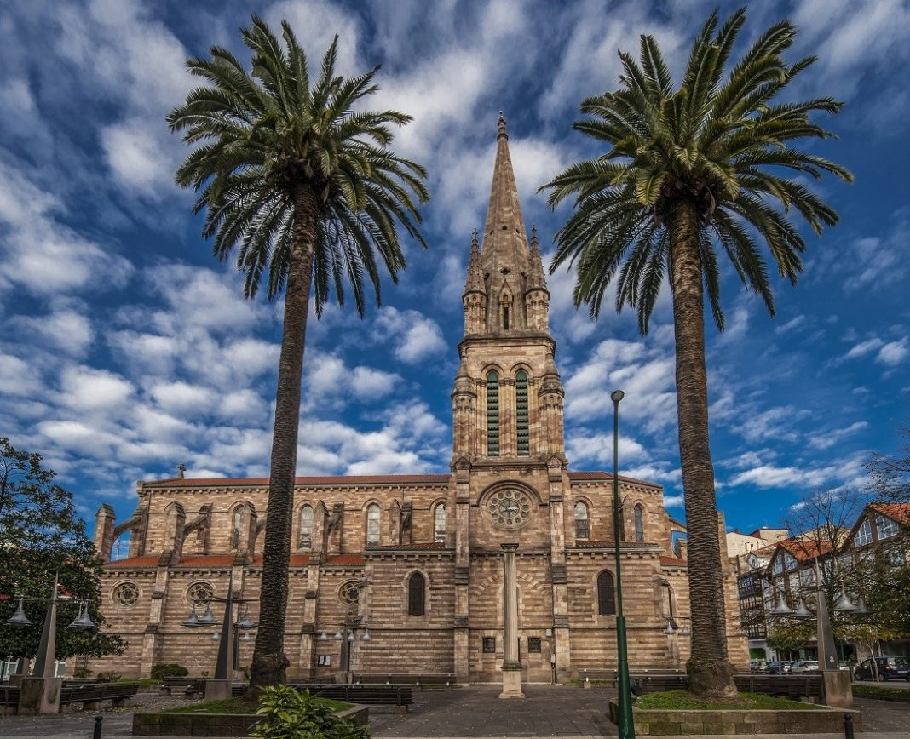

<center><table border="2" width="50%" height="100%">
	<tr>
		<td colspan="2" background="altura.jpg" width="50%" height="50%">
		<center> <h1> <i> TORRELAVEGA </i> </h1> </CENTER>
		</td>
	</tr>
	<tr bgcolor="EFA66E">
		<td>
			<i> Situdada en el corazón del barrio multicultural por excelencia de Torrelavega, encontramos La Iglesia de La Asunción.<br>
			Una mezcla de distintos estilos que dan un resultado...¡espectacular!<br>
			
		</td>
		<td width="200">
			<center><a href="tabla3.html"> Pico Dobra </a> <br>
			
			<center><a href="tabla2.html"> Iglesia de La Asución </a> <br>
			
			<center><a href="tabla.html"> <b> INICIO </b> </a> <br>
		</td>
	</tr>
</table>
</center>